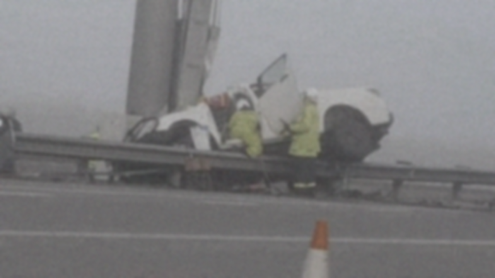

Acidente de carro acaba com 2 crianças mortas e só Motorista sobrevive.
Escrito por Quinn
Nessa madrugada do dia 99/99/9999, um acidente de carro que ocorreu no distrito de de de de de
acabou com a vida de duas crianças que estavam a bordo. De acordo com os agentes policiais na cena,
O carro vinha em alta velocidade pela rodovia quando, por conta da alta tempestade, acabou derrapando pela rua e colidindo
A motorista, mãe das duas, foi a única sobrevivente do impacto.
Diana M. Lorenza, Mãe de Mikaella M. Lorenza e Millo M. Lorenza.
As duas crianças morreram na hora do acidente.

Talento: O que seria potencial e como canalizar-lo
Muitos, ao verem alguém tendo altas habilidades em qualquer ramo, logo aferem que aquele indivíduo possui muito talento. Mas o que poderia se entender desta afirmação? Deve-se entender que aquele indivíduo nasceu com as habilidades já programadas em seu consciente para então sofrer o destino de utilizá-la, em um ramo que foi escolhido não por ele, mas por algo maior, em um caminho que já foi pavimentado em variáveis de genética muito antes de sua sapiência sequer ser desenvolvida? Ou devemos na verdade entender que somente certas pessoas são certas para certas áreas, e que tolo aquele que tenta seguir-las sem essa etiqueta natural?
Para ambos, eu digo: Talento não existe. Pelo menos não nos significados geralmente pensados sobre a palavra.
Ora, se não seria o “talento” somente a predisposição que é construída durante o progresso de nossa vida, sendo uma conjunção de nossos interesses, cultura e âmbitos, somado com a determinação do ser de melhorar naquilo que tem ambição de aprender e desenvolver.
Tudo aquilo que experienciamos e desenvolvemos se aplica como referência em nossas obras, é o que nos molda para ser o que somos e o que criamos, pois somos esta massinha de carne moldada pelo nosso ambiente, inspirada por ele, e o inspirando da mesma forma.
Nosso ser é nossas ambições, nossa determinação é nossa existência, “crio, logo existo”. Ao se locomover para frente, ao construir e pensar, é como mostramos que vivemos para o mundo, e aproveitamos a capacidade que nos foi dada. E assim, tudo que criamos se transforma em nossas obras de arte, e viramos artistas de vários mestres, sendo um deles a realidade em si.
E obras de arte são feitas para serem admi--------------
[ESTE ARTIGO FOI MARCADO PARA DELEÇÃO, POR FAVOR SE INFORME COM O SUPERVISOR]